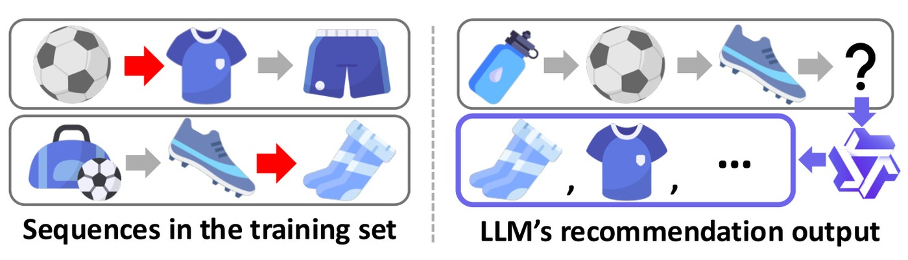
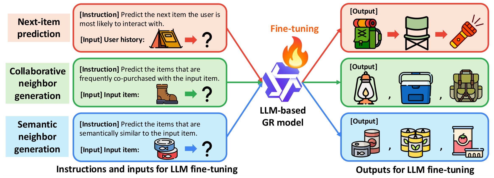
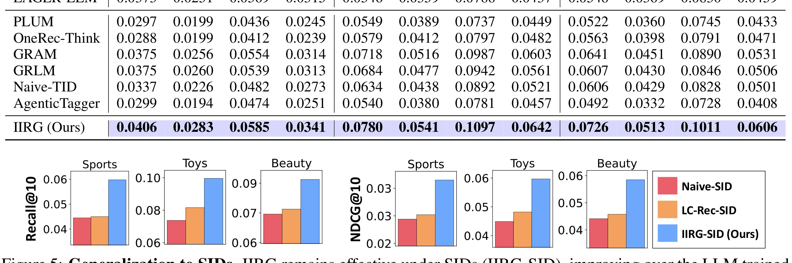
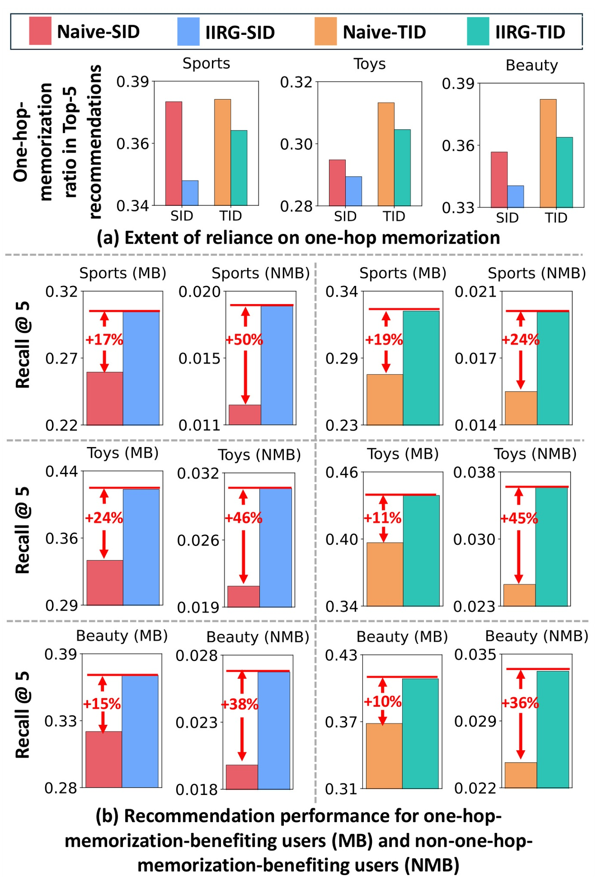

IIRG：LLM 在生成式推荐中的记忆化行为：观察、影响与训练策略
这篇论文《On the Memorization Behavior of LLMs in Generative Recommendation: Observations, Implications, and Training Strategies》由 Sunwoo Kim, Sunkyung Lee, Clark Mingxuan Ju, Donald Loveland, Bhuvesh Kumar, Kijung Shin, Neil Shah, Liam Collins 完成，一作主机构口径为 KAIST / Snap Inc.。论文入口：arXiv:2606.17276，公开日期为 2026-06-15，主类别为 推荐算法，次级标签包括 LLM4Rec / 生成式推荐 / 记忆化 / 训练策略。代码/项目页状态：摘要未给出独立代码链接；本轮只核验 arXiv 页面和 PDF。
LLM 被引入生成式推荐时常被期待利用预训练语义知识，但如果微调后主要记住训练序列中的一跳 item 转移，那么模型对未覆盖用户、长尾目标和新组合的泛化会被严重高估。
1. 背景和问题
论文把 LLM-based generative recommendation 的收益拆到 one-hop memorization 上，指出很多提升来自训练集中已出现的直接后继关系，而不是更丰富的语义泛化。作者提出 IIRG，通过 collaborative neighbor generation、semantic neighbor generation 和 next-item prediction 联合训练，让 LLM 学到多跳协同关系和语义相似关系。 这篇论文值得放进今天的精选，不是因为标题里出现了热门词，而是因为它把一个正在变得更难回避的系统问题拿出来单独测量。它直接质疑 LLM4Rec 的核心假设：大模型带来的到底是语义泛化还是更强记忆。这个问题对线上推荐、长尾覆盖和评测切分都很关键。 对我来说，这类工作最有价值的地方在于它让读者能够追问：指标提升到底来自模型结构、训练样本、反馈循环、容量分配，还是来自评测集合的某种偏置。
从推荐系统和大模型的共同视角看，IIRG 关注的是“状态如何在系统中被保存、更新和再次使用”。推荐链路里，状态可能是用户长期兴趣、item 表示、曝光历史和反馈偏置；大模型链路里，状态可能是上下文缓存、教师提示、推理轨迹、潜在记忆或宽度分配。论文把这些状态变成可计算对象后，才有可能讨论泛化、成本和风险。
历史去重后选择这篇论文，还有一个现实原因：过去几轮已经覆盖了许多 LLM4Rec、Semantic ID、agent memory、KV cache 和 RL 后训练论文。如果今天继续只选择相似方向但没有新评估口径的工作，日报会变成标题堆叠。这里更关注那些能改变诊断方式或系统边界的论文。它们未必立刻给出可上线模块，却能让后续工程判断更精确。
推荐系统里最容易被忽略的是闭环效应和数据切分。一个模型在离线 next-item prediction 上领先，并不代表它在长期曝光、多目标排序、长尾覆盖或新域迁移上仍然可靠。本文的背景部分提醒我们，推荐不只是一次排序，而是“模型给出曝光、用户产生反馈、系统再训练或再排序”的循环。只要循环存在，局部准确率就可能和长期多样性、覆盖率、供需匹配或公平性发生冲突。
因此，本笔记会按四个问题阅读：第一，论文真正要解决的瓶颈是什么；第二，方法如何把瓶颈拆成可训练或可评估的模块；第三，实验是否足以支撑作者主张；第四，如果迁移到推荐系统或大模型工程，最可能先卡在哪些边界上。
IIRG 的问题不应只按论文所属方向来读，而要按系统变量来读。LLM4Rec、一跳记忆、多跳协同邻居、语义邻居和 SID 泛化 分别对应输入状态、模型内部状态、反馈状态和评估状态。只要其中任一状态在离线实验和线上链路之间口径不一致，论文报告的收益就可能被放大或误读。因此我在阅读时把摘要里的贡献拆成“状态定义是否清楚”“状态转移是否可复现”“状态变化是否有指标观测”三层。这样的读法能避免把一个新模型名直接等同于工程收益。
如果放到长期知识库里，IIRG 最值得保留的是它的诊断接口。推荐系统和大模型都已经从单次预测走向连续交互：用户会被前一次曝光影响，agent 会被前一次工具调用影响，模型服务会被前一次缓存和记忆状态影响。IIRG 对这些连续状态的处理给了后续复现一个入口，即先复现状态指标，再复现最终分数。若状态指标不能复现，最终分数即使看起来更高也很难解释。
这也解释了为什么今日没有选择只提供单点榜单提升的候选。IIRG 的价值在于它把旧问题中的隐藏变量显式化，让读者能检查训练集、support set、教师提示、合成先验、宽度预算或潜记忆到底承担什么角色。对工程团队而言，这比“又高了几个点”更重要，因为真实系统的失败往往来自口径漂移和状态污染，而不是模型完全没有能力。
围绕 LLM4Rec、一跳记忆、多跳协同邻居、语义邻居和 SID 泛化，这篇论文还可以从数据生成过程来读。输入样本不是自然存在的中立对象，而是被推荐曝光、用户选择、教师输出、合成先验、模型宽度或推理轨迹共同塑造。若只看最终表格，读者会忽略这些生成过程对实验结论的影响。把生成过程写清楚之后，才能判断论文解决的是数据稀疏、状态压缩、训练信号、服务成本还是评估盲区。
另一个背景点是评测外推。IIRG 的结论即使在论文数据上成立，也不代表能直接迁移到所有业务或所有模型。推荐场景有供需、库存、季节、活动和内容安全约束；大模型场景有上下文长度、服务批处理、用户隐私和模型版本差异。背景章节必须保留这些差异，否则精读笔记会把研究结论写得过满。
2. 方法
2.1 从 one-hop memorization 重新定义训练问题
IIRG 的方法从一个诊断结论出发：LLM-based generative recommender 在 next-item prediction 上的收益，很大一部分可能来自训练集中已经出现过的直接后继转移，而不是来自语言模型的语义泛化。论文先把每个用户历史拆成可检验的转移关系，再区分测试目标是否属于训练集中可见的一跳邻接。这个定义很重要，因为它把“模型是否懂 item 语义”改写成更严格的问题：当真实目标不是训练序列中出现过的直接后继时，模型还能不能生成合理 item。方法的第一步不是新增模块，而是先把记忆化从总指标里分离出来，否则后面的训练策略很容易被已有一跳关系的高命中率掩盖。

Figure 1 在方法阅读里承担的是问题定义证据。它展示了 LLM4Rec 为什么会沿着训练序列中的直接转移复现答案：用户历史、候选 item 和目标 item 之间并不是抽象语义关系，而是被训练样本显式记录过的一跳边。读这张图时应把重点放在边的来源和评估切分上，而不是只看模型名字。若测试目标本身落在可记忆的一跳边里，Recall 或 NDCG 的提升就不能直接说明模型学到了跨用户、跨类目或跨 SID 的泛化能力。
符号解释：$\mathcal{L}_{next}$ 是标准下一物品生成目标，$\mathcal{L}_{collab}$ 是 collaborative neighbor generation 的辅助目标，$\mathcal{L}_{semantic}$ 是 semantic neighbor generation 的辅助目标，$\lambda_c$ 与 $\lambda_s$ 控制两类非一跳信号的权重。这个公式概括了 IIRG 的核心思想：保留 next-item 任务，但不能只让模型围绕一跳后继优化。
2.2 IIRG 用三类生成任务引入协同和语义邻居
在原文结构里，IIRG 的主体不是一个新的打分器，而是一组训练样本构造规则。第一类样本仍然是 next-item prediction，用来保证模型保留基础序列推荐能力；第二类样本要求模型根据用户历史生成 collaborative neighbors，也就是通过相似用户或多跳协同行为得到的相关 item；第三类样本要求模型生成 semantic neighbors，用 item 文本语义或类别信息补充协同图中没有覆盖到的关系。<strong>这三类任务的顺序对应论文的设计动机：先承认一跳预测仍有价值，再用协同邻居和语义邻居把训练信号从“背下一跳”扩展到“理解可替代关系”。</strong>

Figure 4 是方法主图，应该按从左到右的训练样本流来读。它说明 IIRG 不是在推理时临时检索更多 item，而是在微调阶段把三种 instruction-output 任务混合给 LLM；推理阶段仍然执行生成式推荐，只是模型内部已经见过更丰富的邻接关系。这里的工程边界也清楚：如果 collaborative neighbor 的构造依赖全量用户图，它更适合作为离线训练信号；如果 semantic neighbor 依赖 item 文本或类目元数据，则需要保证这些元数据在新 item 上可用，否则所谓语义泛化会变成数据覆盖优势。还应检查三类任务在 batch 中的比例，因为 next-item 过重会重新把模型拉回一跳记忆，辅助任务过重又可能牺牲基础排序精度。这个图因此也是复现 checklist：样本构造、任务混合、ID 表示和推理接口必须同时对齐。
2.3 Semantic ID 泛化和部署边界
论文还检查 IIRG 是否能迁移到 Semantic ID 表示。这个部分与方法主体相连，因为 SID 会把 item 映射成离散语义 code，缓解 term ID 对目录规模和冷启动 item 的依赖。IIRG 在 SID 上仍保留 next-item、collaborative neighbor 和 semantic neighbor 三任务，但评估重点变成：模型生成的是不是更合理的 code 路径，以及这些 code 是否能回到可推荐 item。需要警惕的是，SID 改变的是 item 表示空间，不会自动消除曝光偏置和热门 item 偏置；如果邻居构造本身偏向头部，SID 只会把偏置编码到更紧凑的 code 空间里。
我会把 IIRG 的复现顺序拆成三步：先复现 one-hop split，确认 baseline 的收益是否真的集中在可记忆转移；再固定基础 LLM 和数据切分，只加入 collaborative neighbor 或 semantic neighbor 中的一类辅助任务，看收益来自哪一路；最后再切换到 SID，检查 code-level 泛化是否同向。这样的顺序比直接复刻三任务全量训练更可诊断。对推荐系统工程而言，最先值得上线的也不是完整 IIRG，而是日志级指标：一跳命中占比、多跳邻居命中、语义邻居覆盖和长尾 item 的分层 Recall。只有这些中间指标稳定，才有必要把 IIRG 作为训练策略推进。
3. 实验结果
实验部分需要先看数据和对照。IIRG 的主结果可以概括为：LLM-based GR 在可由训练一跳后继预测的用户上贡献了多数增益；IIRG 在未被一跳覆盖的用户上改善更明显，并在 term ID 和 SID 设置中都保持收益。 这些结论均来自论文公开 PDF，本轮没有重新运行代码，因此具体数值只作为论文报告结果引用，未做独立复现。

Table 1 对这篇推荐论文很关键，因为它把论文讨论的闭环、训练样本或实验指标从抽象描述落到可观察对象。阅读时我重点看三点：第一，图表里的横轴或模块是否对应真实推荐链路中的用户历史、候选生成、item 表示、反馈循环或评价周期；第二，作者是否把模型收益拆到多样性、覆盖、长尾泛化、命中率或计算成本等不同指标，而不是只给一个平均分；第三，图表结论能否解释模型为什么在未被训练分布覆盖的用户或类目上仍有价值。这个截图在正文中承担证据锚点作用：它让后面的机制解释不只停留在摘要层，而能回到论文自己的变量、对照组和指标定义。 本轮裁图只保留 PDF 中的单个对象区域，不包含 caption 和普通正文；为了避免把图表当作装饰，正文还会说明它与前后模块、实验对照和工程判断之间的关系；对应文件为 3.jpg。

Figure 6 对这篇推荐论文很关键，因为它把论文讨论的闭环、训练样本或实验指标从抽象描述落到可观察对象。阅读时我重点看三点：第一，图表里的横轴或模块是否对应真实推荐链路中的用户历史、候选生成、item 表示、反馈循环或评价周期；第二，作者是否把模型收益拆到多样性、覆盖、长尾泛化、命中率或计算成本等不同指标，而不是只给一个平均分；第三，图表结论能否解释模型为什么在未被训练分布覆盖的用户或类目上仍有价值。这个截图在正文中承担证据锚点作用：它让后面的机制解释不只停留在摘要层，而能回到论文自己的变量、对照组和指标定义。 本轮裁图只保留 PDF 中的单个对象区域，不包含 caption 和普通正文；为了避免把图表当作装饰，正文还会说明它与前后模块、实验对照和工程判断之间的关系；对应文件为 4.jpg。
主结果之外，更值得看的是作者如何做 ablation 或诊断。一个可信实验通常不只回答“是否更高”，还要回答“为什么更高”。如果收益主要集中在特定数据集、特定模型规模、特定 tokenization、特定 hard question 或特定 benchmark，工程迁移时就不能把平均提升直接外推到所有场景。本文的图表提供了这种拆分，但仍需要后续用真实业务日志或开源代码复验。
对推荐系统而言，离线表格尤其要警惕三个问题：其一，训练/测试切分是否让 one-hop transition 或热门 item 过度占优；其二，多样性、覆盖率、长尾命中和供需匹配是否与主指标一起报告；其三，模型是否在新域或新类目上真的不需要重训。对 LLM 而言，则要看计算预算是否公平、教师大小是否固定、prompt replay 或 memory training 是否带来额外数据泄漏，以及推理时成本是否计入比较。
本轮没有把未核验数字扩写成确定事实。报告中保留作者给出的相对结论和关键设置，原因是这些论文多为 arXiv 新稿，代码、数据和实验脚本状态还不完整。下一步若要把其中某篇纳入工程评估，应优先复现最小实验：推荐论文复现一个公开数据集和一个长尾/新域切分；LLM 论文复现一个小模型、小 benchmark 与成本统计。
IIRG 的实验结果要和问题设置一起读。对推荐论文，主指标之外必须看长尾、覆盖、多样性、新域和闭环轮次；对 LLM 论文，准确率之外必须看模型规模、教师规模、推理 token、缓存、FLOPs、训练步数和记忆参数量。只要这些成本没有并列报告，就不能把平均分提升直接解释为工程收益。本文报告的结论有参考价值，但仍应以独立复现作为后续判断依据。
第二层实验检查是对照组是否覆盖真正竞争路线。IIRG 如果只和弱 baseline 比较，结论会偏乐观；如果覆盖传统方法、近期强方法、消融版本和成本匹配版本，可信度会更高。今天的笔记保留主结果和关键图表，目的就是让后续回看时能知道作者比较了哪些对象，以及哪些对象还缺失。未被图表直接支持的推广判断，我在正文中都按“需要后续核验”处理。
第三层实验检查是失败模式。真实系统通常不是平均用户失败，而是某些用户、某些类目、某些困难题、某些上下文长度、某些缓存状态或某些教师输出失败。IIRG 的实验若能暴露这些异质性，就比单表格更有价值。后续复现时应刻意挑选最容易出问题的切分，而不是只复现作者最友好的平均设置。
IIRG 后续最应该补的是压力测试。推荐论文应在用户活跃度、item 流行度、目录规模和时间切分上做分层；LLM 论文应在模型大小、上下文长度、batch size、教师质量和任务难度上做分层。只有分层后仍同向，才能说明方法不是只吃某个平均分布。
成本指标必须和质量指标并列。生成式推荐如果提高多样性却显著增加 serving 成本，LLM 后训练如果提高准确率却需要更高教师调用或更多 replay，架构改变如果降低 FLOPs 却破坏硬件吞吐，工程结论都会改变。本文当前只按论文公开数据记录，未把这些成本重新折算到统一硬件或业务口径，因此保守标为技术调研。
IIRG 的实验还应关注显著性和稳定性。新论文常给出多个数据集的平均提升，但工程上更关心最差切分是否恶化、低资源场景是否稳定、以及指标方差是否可接受。没有方差或置信区间时，本文只把趋势作为线索，不把单个数字当作确定事实。
另一个检查点是主结果和消融是否互相支持。如果主结果提升很大，但消融无法证明关键模块有效，或图表只展示平均曲线而没有失败案例，读者就应降低结论强度。IIRG 当前公开材料提供了足够的阅读价值，但后续最好等待代码、数据或附录细节补齐后再做强判断。
IIRG 的下一步验证应采用“主指标加诊断指标”的组合。主指标用于确认是否有总体收益，诊断指标用于解释收益来自哪里。推荐系统可以用 Recall/NDCG 搭配覆盖、熵、长尾命中和供需匹配；大模型可以用准确率搭配 token、FLOPs、cache、教师调用次数和失败样本 graduation。只有两类指标同时改善，才值得提高结论强度。
4. 总结
IIRG 的核心价值在于把一个容易被平均指标掩盖的问题拆成可诊断对象。它不应该被读成“已经解决推荐或大模型中的某个终局问题”，而应该被读成一套新的检查方法：先看状态如何表示，再看反馈如何进入训练，最后看实验是否覆盖真实系统会遇到的长尾、成本和分布变化。
我的判断是，这篇论文最适合进入“后续复现/监控指标设计”清单，而不是立即进入线上主模型替换清单。它给出的结构、指标或训练策略可以先作为离线诊断工具使用：例如检查生成式推荐的 code-space 集中度、LLM4Rec 的一跳记忆比例、跨域序列推荐的 update-free 适配能力、Transformer 宽度预算的成本曲线、教师提示在 hard question 上的收益，或 latent memory 在个性化任务中的可迁移性。
局限方面至少有四点。第一，多数结果来自公开 benchmark 或仿真，和真实线上流量仍存在口径差异。第二，代码状态不完全一致，短期内复现成本可能高。第三，部分指标依赖模型规模、tokenization 或教师选择，换模型后可能不稳定。第四，论文没有完全覆盖隐私、安全、长期反馈偏置和灰度发布失败模式。
后续跟进建议有三条：先复现一组最小公开实验，确认关键指标方向；再把论文中间指标映射到自己系统的日志字段，例如曝光覆盖、cache 命中、教师使用率或记忆检索命中；最后只选择一个低风险模块做离线 shadow test，不要一开始就把完整框架接入生产链路。
我会把 IIRG 放进“可诊断系统设计”这一组，而不是只放进单一推荐或单一 LLM 标签。它的共同价值在于提醒我们，模型能力的增长必须伴随状态、成本和反馈的可观测性。没有这些观测，即使某个模块在论文表格里领先，也很难知道它上线后会改善用户体验、降低成本，还是只是改变了离线分布。
后续阅读时可以沿三条线推进。第一，追踪代码和数据是否释放，确认复现门槛；第二，把论文指标映射到本地可观测日志，判断是否能做 shadow evaluation；第三，和历史笔记中的相近论文对照，避免重复验证同一个假设。IIRG 的直接价值是给这个对照过程增加新的检查项。
IIRG 的后续价值取决于能否形成可维护的复现卡片。卡片至少应包括论文版本、数据集、核心指标、成本指标、失败切分、代码状态和和历史相似论文的差异。这样一来，明天或下周继续跟踪时，不会因为标题相似而重复做同一件事，也不会因为模型名字新就忽略旧假设没有被验证。